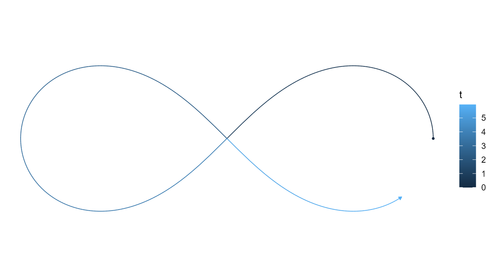
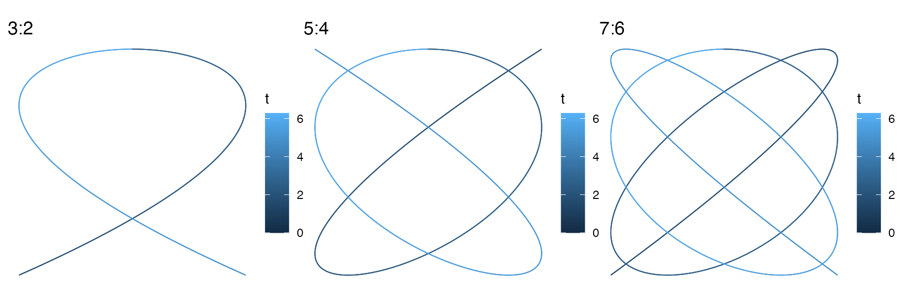
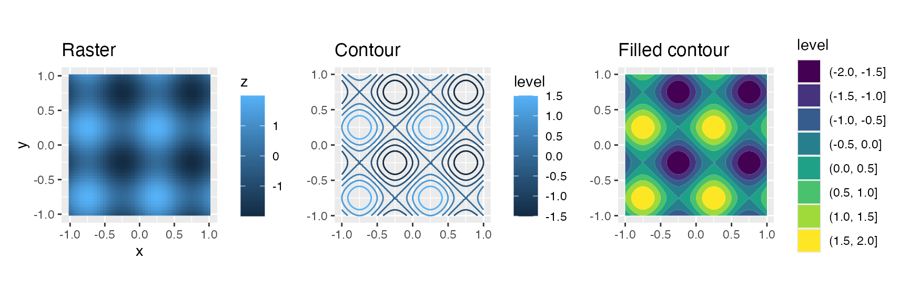
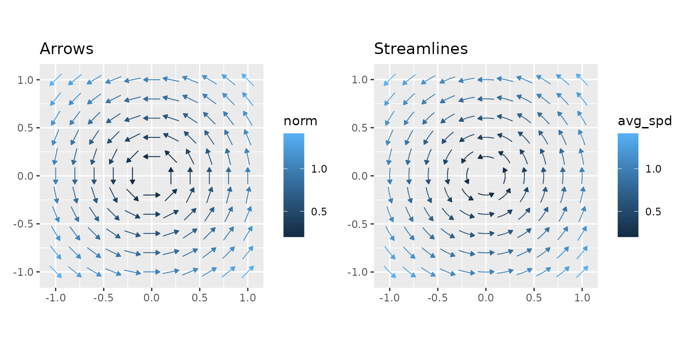
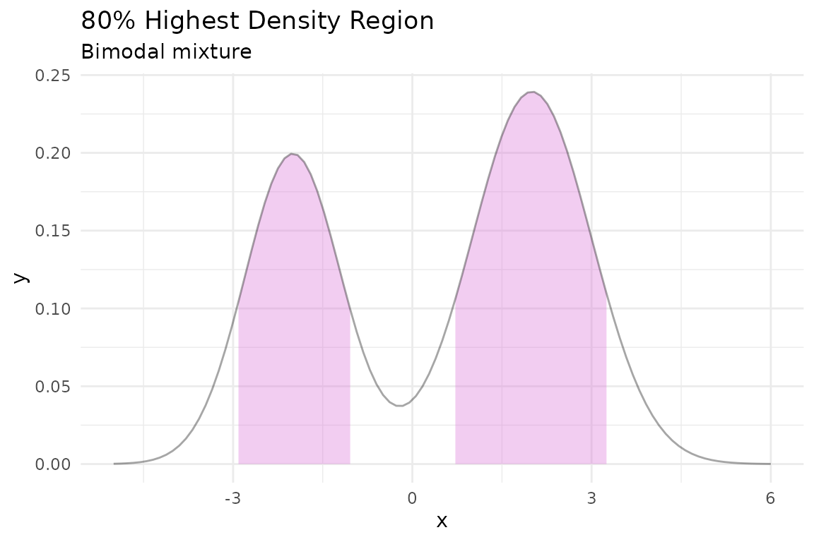
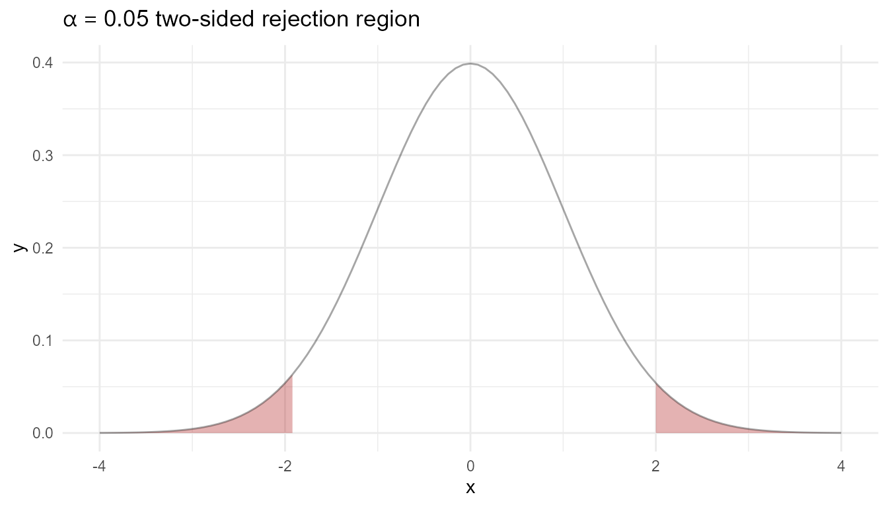
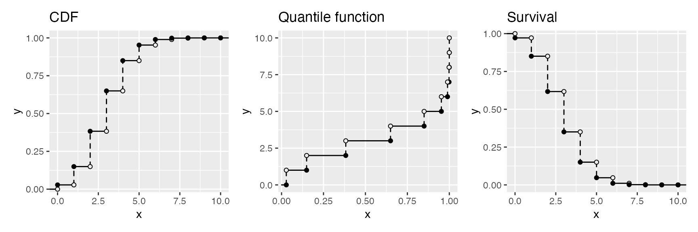
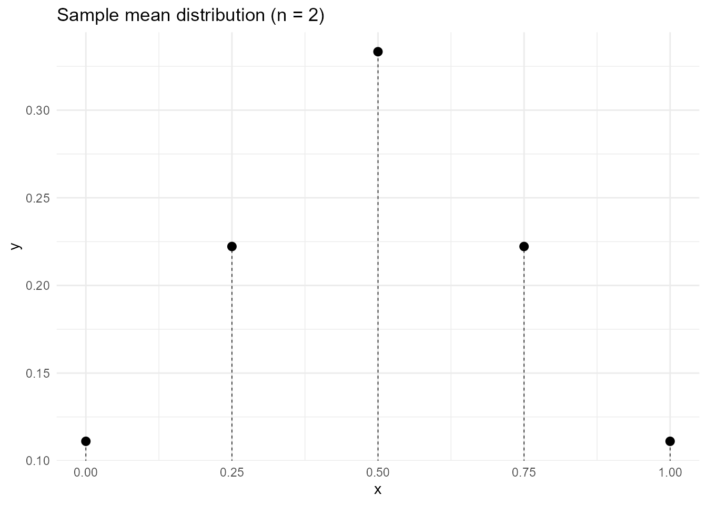
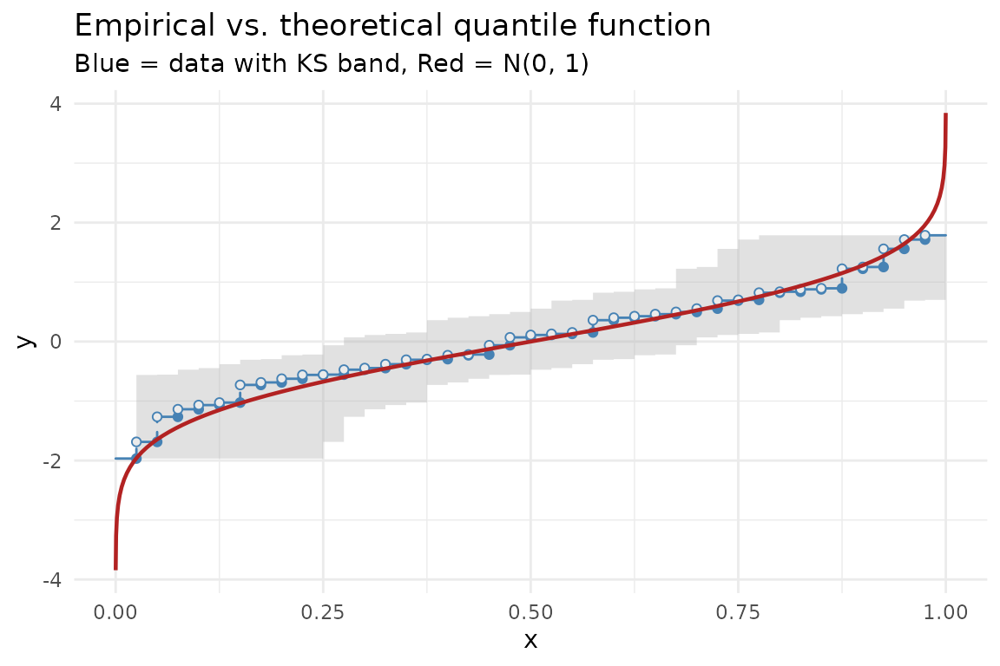

A showcase of what ggfunction can do. Each example is self-contained.
Parametric curves
A lemniscate of Bernoulli with an arrowhead and tail marker:
lemniscate <- function(t) {
r <- sqrt(pmax(2 * cos(2 * t), 0))
c(r * cos(t), r * sin(t))
}
ggplot() +
geom_function_1d_2d(
fun = lemniscate, tlim = c(0, 1.9 * pi),
tail_point = TRUE,
arrow = grid::arrow(angle = 30, length = grid::unit(0.02, "npc"),
type = "closed")
) +
coord_equal() +
theme_void()
Lissajous figures with different frequency ratios:
make_lissajous <- function(a, b) {
function(t) c(sin(a * t), cos(b * t))
}
p1 <- ggplot() +
geom_function_1d_2d(fun = make_lissajous(3, 2), tlim = c(0, 2 * pi)) +
coord_equal() + ggtitle("3:2") + theme_void()
p2 <- ggplot() +
geom_function_1d_2d(fun = make_lissajous(5, 4), tlim = c(0, 2 * pi)) +
coord_equal() + ggtitle("5:4") + theme_void()
p3 <- ggplot() +
geom_function_1d_2d(fun = make_lissajous(7, 6), tlim = c(0, 2 * pi)) +
coord_equal() + ggtitle("7:6") + theme_void()
p1 + p2 + p3
Scalar fields
The same 2D function shown as a raster, contour lines, and filled contours:
f_wave <- function(v) sin(2 * pi * v[1]) + sin(2 * pi * v[2])
p1 <- ggplot() +
geom_function_2d_1d(fun = f_wave, xlim = c(-1, 1), ylim = c(-1, 1)) +
ggtitle("Raster") + coord_equal()
p2 <- ggplot() +
geom_function_2d_1d(fun = f_wave, xlim = c(-1, 1), ylim = c(-1, 1),
type = "contour") +
ggtitle("Contour") + coord_equal()
p3 <- ggplot() +
geom_function_2d_1d(fun = f_wave, xlim = c(-1, 1), ylim = c(-1, 1),
type = "contour_filled") +
ggtitle("Filled contour") + coord_equal()
p1 + p2 + p3
Vector fields
A rotation field rendered as arrows and as streamlines:
f_rot <- function(u) c(-u[2], u[1])
p1 <- ggplot() +
geom_function_2d_2d(fun = f_rot, xlim = c(-1, 1), ylim = c(-1, 1)) +
coord_equal() + ggtitle("Arrows")
p2 <- ggplot() +
geom_function_2d_2d(fun = f_rot, xlim = c(-1, 1), ylim = c(-1, 1),
type = "stream") +
coord_equal() + ggtitle("Streamlines")
p1 + p2
Multimodal HDR
Highest density regions shine for multimodal distributions where equal-tailed intervals would miss probability mass:
bimodal <- function(x) 0.4 * dnorm(x, -2, 0.8) + 0.6 * dnorm(x, 2, 1)
ggplot() +
geom_pdf(fun = bimodal, xlim = c(-5, 6), shade_hdr = 0.8,
fill = "orchid") +
labs(title = "80% Highest Density Region", subtitle = "Bimodal mixture") +
theme_minimal()
Tail shading and rejection regions
Shade both tails simultaneously with
shade_outside = TRUE — a natural visual for hypothesis
testing:
ggplot() +
geom_pdf(
fun = dnorm, xlim = c(-4, 4),
p_lower = 0.025, p_upper = 0.975,
shade_outside = TRUE, fill = "firebrick"
) +
labs(title = expression(alpha == 0.05 ~ "two-sided rejection region")) +
theme_minimal()
Discrete step functions
CDF, quantile function, and survival function side-by-side for the same Binomial(10, 0.3) distribution:
binom_args <- list(size = 10, prob = 0.3)
p1 <- ggplot() +
geom_cdf_discrete(pmf_fun = dbinom, xlim = c(0, 10), args = binom_args) +
ggtitle("CDF")
p2 <- ggplot() +
geom_qf_discrete(pmf_fun = dbinom, xlim = c(0, 10), args = binom_args) +
ggtitle("Quantile function")
p3 <- ggplot() +
geom_survival_discrete(pmf_fun = dbinom, xlim = c(0, 10), args = binom_args) +
ggtitle("Survival")
p1 + p2 + p3
Non-integer support
A PMF on a custom support — the distribution of the sample mean from a discrete uniform on with :
mean_probs <- function(x) {
vals <- c(0, 0.5, 1)
grid <- expand.grid(x1 = vals, x2 = vals)
means <- rowMeans(grid)
tab <- table(means) / nrow(grid)
ifelse(as.character(x) %in% names(tab), as.numeric(tab[as.character(x)]), 0)
}
ggplot() +
geom_pmf(fun = Vectorize(mean_probs), xlim = c(0, 1),
support = seq(0, 1, by = 0.25)) +
labs(title = "Sample mean distribution (n = 2)") +
theme_minimal()
Empirical vs. theoretical
Overlay an empirical quantile function with the theoretical quantile function to visually assess goodness-of-fit:
set.seed(123)
df <- data.frame(x = rnorm(40))
ggplot(df, aes(x = x)) +
geom_eqf(color = "steelblue") +
geom_qf(fun = qnorm, args = list(mean = 0, sd = 1),
color = "firebrick", linewidth = 0.8) +
labs(title = "Empirical vs. theoretical quantile function",
subtitle = "Blue = data with KS band, Red = N(0, 1)") +
theme_minimal()